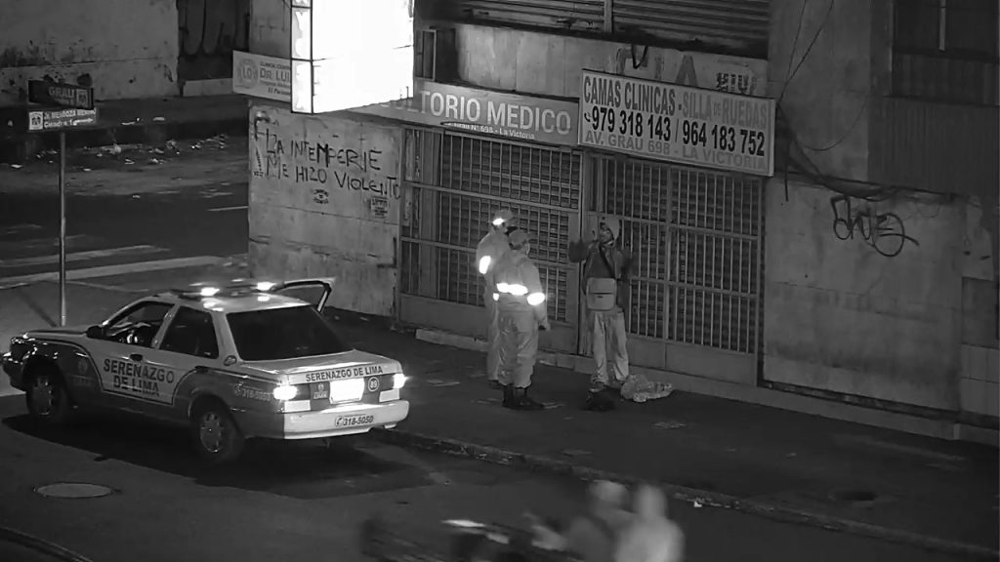
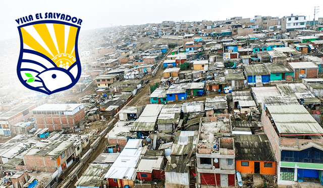
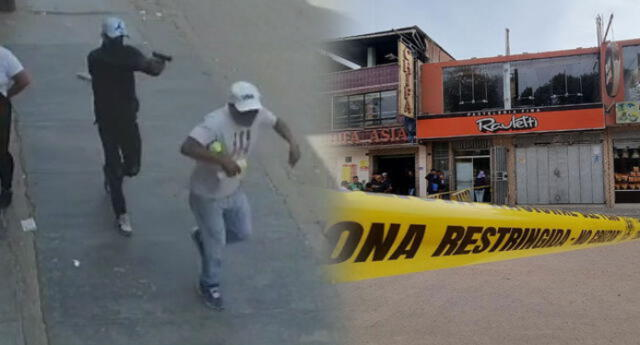

Zonas Peligrosas y con Más Robos en Lima, Perú
San Juan de Lurigancho
En estos primeros tres meses del 2023, San Juan de Lurigancho registró un total de 1.810 hurtos denunciados. Esto lo convierte en el distrito con mayor número de delitos contra el patrimonio en lo que va de este año.
San Martín de Porres
Este distrito, que alberga más de 654.000 habitantes, ha reportado un total de 1.516 robos entre enero a marzo del 2023.
Cercado de Lima
Según la data policial, durante el primer trimestre de este 2023, se ingresaron 1.250 denuncias por robo en el Cercado de Lima.
Comas
De acuerdo con el informe, Villa el Salvador ha contabilizado 1.047 casos denunciados por delitos contra el patrimonio.
Villa El Salvador
Con un total de 1.029 robos denunciados, Comas se convierte en el quinto distrito con mayor número de casos durante el primer trimestre del 2023.
